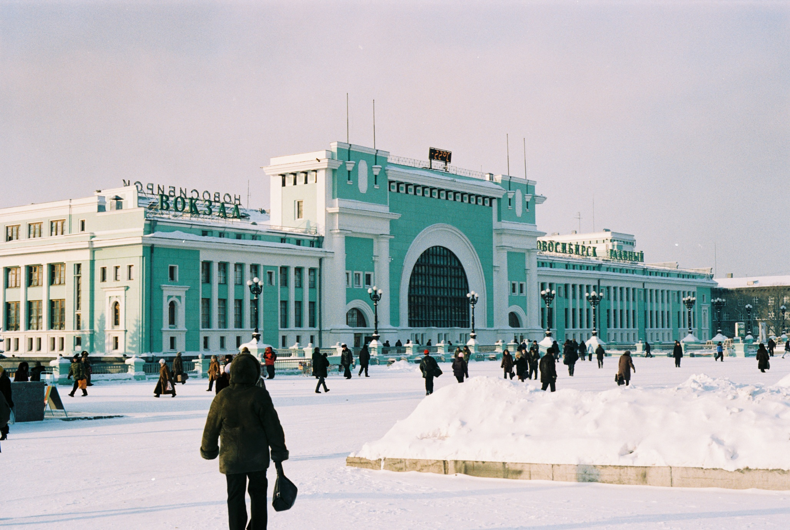
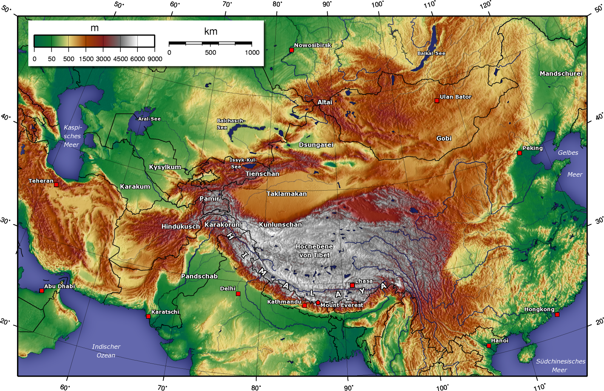
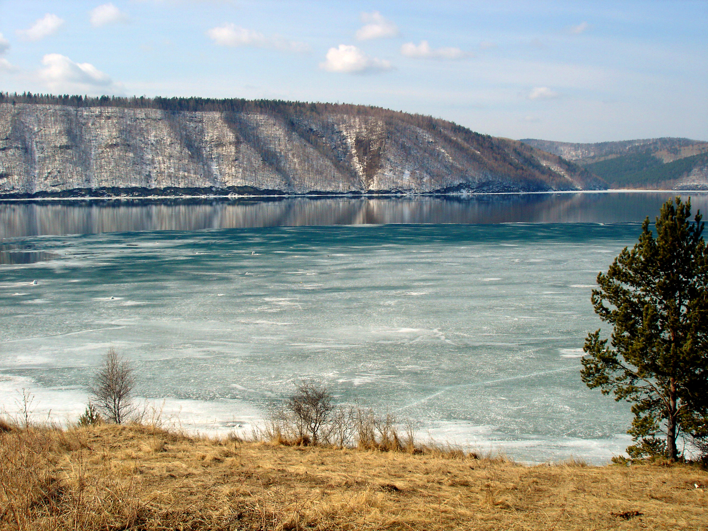
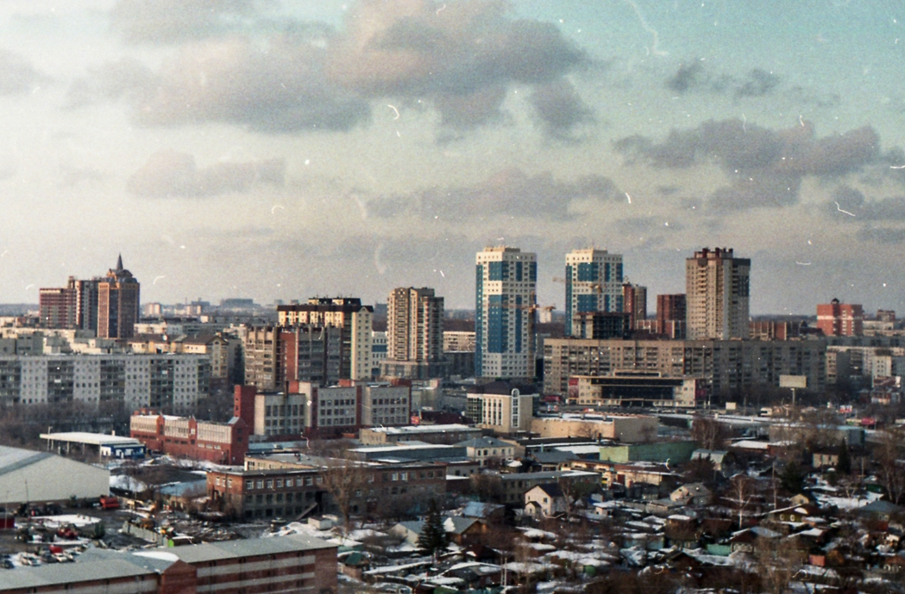

Oh! I’m so glad you asked!
I’m sitting at this beautiful cafe in Las Vegas right now asking myself quite legitimately what to write for this post. There are so many reasons why I shouldn’t go to Russia. number 1 being the cold, 2, depression, and the countless stories i’ve heard from other Russians.
So making a list is actually a very reassuring thing to do.
I made it a goal to learn 5 languages fluently during my lifetime. I would say I’m pretty fluent in French. Russian will be my number 3 language. Immersion is the best way! I used to always tell people that I wanted to live in a different country every year, and learn the language of the land. Here I am.
Russia is such a far away place. I know the culture is so different from what I’m used to. I’ve traveled to over 30 countries around the world. Traveling is one thing, but culture is a whole ‘nother ball-park. You will learn more living in a country than any 2 week trip will give you. Siberia is in the heart of Russian culture.
I am one to constantly challenge myself. If i’m not being mentally or physically challenged, I am not in my zone. I like self-growth, and I’m sure this adventure will be more self-growth than I could find anywhere else. Whats a better way than enduring the infamous Siberian winter? Even if it involves self-hate and depression for a few months. That’s acclimation. (And this will be great to read while I am amidst the struggle)

In the 30+ countries that I’ve traveled to, I have never been to this region. My city is in the South of Siberia right next to Kazahkstan and Mongolia! Not too far from South Korea and Japan, places to see on my list.

Novosibirsk lays on the Southern part of Siberia. 1.5 million residents reside in Novosibirsk. It’s a pretty big city despite being in the center of Russia. It’s right on the Trans-Siberian railway, which goes to Moscow, Ulaanbaatar, Beijing, just to name a few.

I have my flight, visa costs, living expenses paid for if I don’t break my contract. So, why not?
I’m gonna probably agree.
Once I finish this journey, my current plan in to join the Peace Corp, or find another teaching job around the world.
But who knows?, plans change.